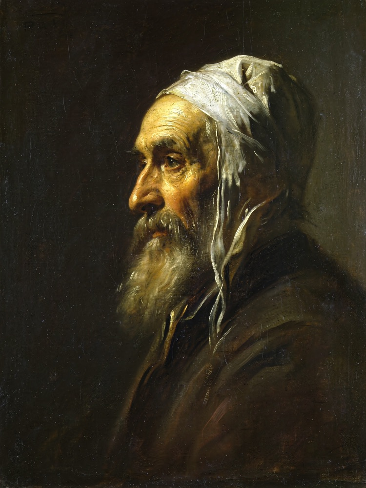

元宝生图 · 线上实测
2026-10-22 00:00–00:17 · https://yuanbao.example.com/v1/images/{generations,edits}
· 模型 hy-image-3.5 · 实测号 me / ybc2（acc01 组内 cookie 号）
成功率
13 / 13
文生图 8 + 图生图 5，零失败
文生图耗时
27–59 s
中位 36.4 s，并发 5
图生图耗时
52–211 s
中位 75.6 s，比文生图慢 2–3×
交付像素
2K / 4K 精确
修复后与请求值完全一致
一、文生图（8 种比例，全部 200）
| 请求 size | 耗时 | 上游实际出图 | 交付像素 | 体积 | 走向 |
|---|
1024x1024 | 39.1 s | 1:1 · 2048² | 2048 × 2048 | 5.4 MB | me |
1792x1024 | 30.6 s | 16:9 · 2240×1248 | 2240 × 1248 | 4.1 MB | ybc2 |
1024x1792 | 30.6 s | 9:16 · 1248×2240 | 1248 × 2240 | 3.6 MB | ybc2 |
1408x1056 | 43.6 s | 4:3 · 1920×1440 | 1920 × 1440 | 5.0 MB | me |
1056x1408 | 58.7 s | 3:4 · 1440×1920 | 1440 × 1920 | 3.9 MB | me |
1920x816 (21:9) | 27.4 s | 16:9 · 2240×1248 | 2240 × 1248 | 3.8 MB | ybc2 |
2560x1440 | 36.4 s | 2K + CI 放大 | 2560 × 1440 | 5.7 MB | me |
3840x2160 | 28.2 s | 2K + CI 放大 | 3840 × 2160 | 7.9 MB | ybc2 |
上游能力边界：只有 resolutionList = ["1.5K","2K"]，没有 4K；比例也只有
1:1 / 4:3 / 3:4 / 16:9 / 9:16 五个槽位。所以 任何请求都按 2K 提交，
超过 2K 由图床 CI 做一级放大 —— 这是插值，不是 AI 超分（ImageSuperResolution 在该桶未开通）。
二、图生图（单图 / 多图，全部 200）
| 用例 | 参考图 | 耗时 | 交付像素 | 走向 | 说明 |
|---|
| single | 1 张 | 137.3 s | 2048 × 2048 | me | 风格迁移偏弱，更像"加纹理"而非重绘 |
| single_wide | 1 张 | 75.6 s | 2240 × 1248 | me | 扩成宽幅，主体保持 |
| multi2 | 2 张 | 51.5 s | 2048 × 2048 | ybc2 | 两主体自然融合 |
| multi3 | 3 张 | 63.2 s | 2048 × 2048 | ybc2 | 三主体 + 自动排版成海报 |
| multi_4k | 2 张 | 210.6 s | 3840 × 2160 | me | 多图 + 4K 放大，最慢一例 |
图生图慢在排队而不是放大：同样的 4K 放大，文生图 28 s、图生图 211 s ⇒ 上游对带参考图的
请求排队更久。多图并不更慢（2 张 51 s、3 张 63 s），慢的是单图那次 137 s 的抖动。
三、查出的两个真问题
| 问题 | 根因 | 处置 |
|---|
4K 交付 3877×2160
比请求宽 37 px |
imageMogr2/thumbnail/!WxHr 是 cover 语义：上游 16:9 实际出的是 2240×1248（1.7949，不是 1.7778），按高贴合后宽自然溢出 |
已修 改链式 thumbnail/!WxHr|imageMogr2/gravity/center/cut/WxH，实测精确到 3840×2160 / 2560×1440 |
| 21:9 请求悄悄变成 16:9 |
上游没有 21:9 槽位，_size_to_ratio() 按对数距离映射到最近的 16:9 |
未改 这是能力边界，不报错是兼容性选择；已在响应 upscale.exact=false 与 note 里写明 |
踩坑记录（都做了实测验证）：
thumbnail/!WxHr/cut/WxH（用斜杠连写）会被 整体忽略并静默返回原图 —— CI 的链式分隔符必须是 |- 裁切只在「请求比例 ≈ 上游槽位比例（≤2%）」时做；否则硬裁会削掉主体（实测横图硬裁成 1080×1920 丢掉左右大幅画面）
- 本地保留
4K-exact.png 作证：sips 读取为 3840 × 2160
四、成品（点击可看原图尺寸）
4K 精确裁切3840×2160
1:12048²
16:92240×1248
9:161248×2240
4:31920×1440

3:41440×1920
21:9 → 16:9被映射，如实标注
图生图 · 单图2048²
图生图 · 双图2048²
图生图 · 三图海报2048²
图生图 · 多图 4K3840×2160
图生图 · 扩宽幅2240×1248
五、复现命令
cd reverse/hunyuan
python tools/live_image_test.py all # 文生图 8 例 + 图生图 5 例，落盘 /tmp/ybt
python tools/ci_ops_probe.py # 复验 CI 算符（'|' 链式 cut）